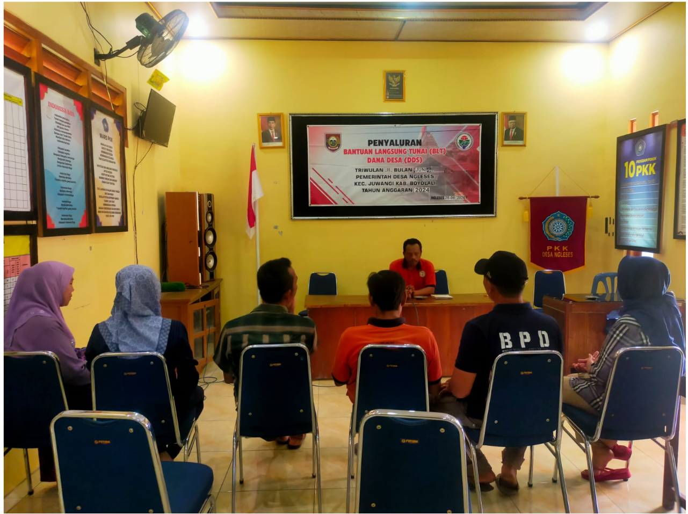

BPD
BPD adalah singkatan dari Badan Permusyawaratan Desa, yaitu lembaga perwakilan masyarakat desa di Indonesia yang berperan dalam penyelenggaraan pemerintahan desa. BPD berfungsi sebagai wadah aspirasi masyarakat desa sekaligus mitra kerja bagi kepala desa dalam menjalankan pemerintahan dan pembangunan desa.
Tugas Dan Fungsi BPD
- Penyelenggaraan Demokrasi di Desa: Menampung dan menyalurkan aspirasi masyarakat desa. Menyusun dan menetapkan kebijakan bersama kepala desa melalui musyawarah desa.
- Legislatif Desa: Membahas dan menyepakati rancangan peraturan desa yang diajukan oleh kepala desa. Mengawasi pelaksanaan peraturan desa dan anggaran pendapatan dan belanja desa (APBDes).
- Pengawasan Pemerintahan Desa: Mengawasi kinerja kepala desa dalam menjalankan tugasnya, termasuk pelaksanaan pembangunan, keuangan, dan pelayanan publik.
- Mediasi dan Penyeimbang: Menjadi penengah jika terjadi konflik antara kepala desa dengan masyarakat. Berfungsi sebagai penghubung antara pemerintah desa dan masyarakat desa.
- Evaluasi dan Pengawasan Anggaran: Memastikan penggunaan dana desa sesuai dengan rencana dan peraturan yang berlaku.
BPD (Badan Permusyawaratan Desa) Didirikan pada tahun 2000, BPD desa kami berfungsi sebagai mitra pemerintah desa dalam menyampaikan aspirasi masyarakat, menyusun kebijakan desa, serta melakukan pengawasan terhadap jalannya pemerintahan desa. Kelembagaan BPD desa kami terdiri dari 9 anggota yang mewakili berbagai elemen masyarakat. Dengan semangat demokrasi dan kebersamaan, BPD aktif dalam musyawarah desa, pembentukan peraturan desa, serta memastikan transparansi dan akuntabilitas dalam pelaksanaan pembangunan desa.